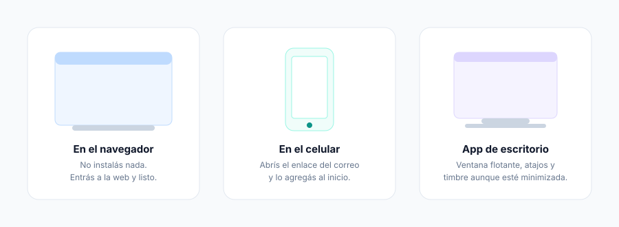

Para quién es este manual
Para vos, que vas a usar el teléfono todos los días. No hace falta saber nada de tecnología:
si sabés usar una app del celular, sabés usar esto.
1. ¿Qué recibiste?
Tu administrador te mandó un correo con un código QR y un enlace. Con eso configurás tu teléfono en un paso: no tenés que anotar contraseñas ni configurar nada a mano.
El acceso vence en 24 horas. Si se te venció, pedile uno nuevo al administrador.

2. Elegí tu teléfono
Podés usar el que más te sirva. Los tres funcionan igual y podés tener varios a la vez.
| Cuándo conviene | |
|---|---|
| En el navegador | No instalás nada. Entrás a la web y ya tenés teléfono. |
| En el celular | Abrís el enlace del correo y lo agregás a la pantalla de inicio. |
| App de escritorio (Windows) | Si pasás el día llamando: ventana flotante, atajos, timbre aunque esté minimizada. |

3. Configurar la app de escritorio
- Instalá PBX-NG Softphone (te lo pasa el administrador).
- Al abrirla vas a ver la pantalla de acceso. Tocá el botón de QR, a la derecha del título.
- Elegí "Pegar código" y pegá el enlace que te llegó por correo.
- Listo: el teléfono se configura solo y queda en línea.

Cuando el punto de tu nombre está verde, estás en línea y podés llamar y recibir llamadas.
4. Iniciar sesión
Hay dos formas de que tu teléfono se conecte a la central, y el administrador ya eligió cuál te corresponde. La app te la deja configurada sola cuando usás el QR o el enlace; esta sección es para que entiendas qué estás viendo, y para el caso en que tengas que cargarlo a mano.
4.1 Con el enlace o el QR (lo normal)
- Abrí la app y tocá el botón de QR, a la derecha del título "Conectar a tu central".
- Si tenés cámara, escaneá el código del correo. Si no (una PC de escritorio, por ejemplo), la app
te ofrece directamente "Pegar código": pegá el enlace del correo.
- La app detecta sola si tu interno es WebRTC o SIP, se configura y queda en línea.

4.2 A mano: modo WebRTC
Es el modo habitual: el teléfono habla con la central por Internet, cifrado, sin necesidad de puertos especiales en tu red. Funciona bien desde casa, desde el celular y detrás de casi cualquier router.
| Campo | Qué poner | Ejemplo |
|---|---|---|
| Servidor WebSocket (WSS) | La dirección que te dio el administrador | wss://pbx.tu-empresa.com/ws |
| Dominio SIP | Suele ser el mismo dominio, sin el wss:// | pbx.tu-empresa.com |
| Interno / usuario | Tu número | 2001 |
| Contraseña | La de tu interno | — |

4.3 A mano: modo SIP nativo
Es el modo clásico, el que usan los teléfonos de escritorio. Se usa cuando la central no expone WebRTC, o cuando estás dentro de la red de la empresa.
| Campo | Qué poner | Ejemplo |
|---|---|---|
| Servidor SIP | Host o IP de la central | 192.168.1.10 |
| Puerto | 5060 para UDP/TCP, 5061 para TLS | 5060 |
| Dominio SIP | El dominio de la central | pbx.tu-empresa.com |
| Interno y contraseña | Los tuyos | 2001 |

¿Cuál te toca? No adivines: si el administrador te mandó el enlace, la app lo resuelve sola.
Un interno WebRTC no funciona bien en modo SIP nativo (el audio no levanta, porque la central
le exige cifrado), y un interno SIP clásico no tiene WebSocket al que conectarse.
4.4 Qué pasa después de conectar
La app hace una verificación en varios pasos y te la muestra: alcanza el servidor, negocia el cifrado, se registra. Si algo falla, te dice el motivo real (por ejemplo "Registro rechazado (401) — revisá interno/contraseña"), no un error genérico.
Cuando el punto de tu nombre está verde, estás en línea.

4.5 Entrar también a la plataforma
Además del teléfono, tu acceso te conecta con el sistema de la empresa: así ves la ficha del cliente que te llama, el directorio y el intercom. Si el administrador te dio ese permiso, ya viene incluido en el enlace y no tenés que hacer nada.
Si alguna vez te desconectás, en Ajustes → Sistema podés volver a entrar con tu usuario y contraseña del panel.

5. Llamar
Marcá el número en el teclado y tocá el botón verde. También podés escribir el nombre de un compañero: aparece solo mientras tipeás.

6. Recibir una llamada
Cuando te llaman, la app suena y aparece quién es. Si el número está en el sistema de clientes, vas a ver su ficha antes de atender: sabés con quién hablás desde el "hola".
Atendés con el botón verde, rechazás con el rojo.

7. Durante la llamada
| Botón | Qué hace |
|---|---|
| Silenciar | El otro deja de escucharte. Vos lo seguís escuchando. |
| Teclado | Para marcar opciones ("marque 1 para…"). |
| Retener | La persona queda en espera con música. |
| Transferir | Le pasás la llamada a otro interno. |
| Video | Encendés la cámara. |
| Invitar | Sumás a otra persona a la conversación. |
| Grabar | Empieza a grabar la llamada. |

Abajo de la llamada vas a ver una etiqueta que dice VÍA TURN o DIRECTO. Es informativa: te
dice por dónde viaja el audio. Si tenés problemas de sonido, ese dato le sirve al administrador.
8. La ventana flotante (app de escritorio)
Tocá el botón mini en la barra superior y el teléfono se convierte en una ventanita chica que queda siempre visible, aunque estés en otra aplicación. Desde ahí atendés, silenciás, cortás y controlás el volumen.

9. Tu buzón de voz
Si no atendés, la persona puede dejarte un mensaje.
- Desde el teléfono: marcá
*97. La primera vez, el PIN es tu número de interno. - Desde la app: en la sección Voz los escuchás, los leés transcritos y los borrás.
- Por correo: si el administrador lo activó, cada mensaje te llega al mail con el audio adjunto
y la transcripción escrita. Te enterás de qué se trata sin escuchar nada.

10. Si trabajás con colas (agentes)
Tu panel muestra las llamadas en espera, tus estadísticas del día y tu historial.
- Pausa: si tenés que ausentarte, ponete en pausa y la cola deja de mandarte llamadas.
Volvé a activarte al regresar — es el olvido más común.
- Descanso entre llamadas: después de cortar tenés unos segundos para tipificar antes de que
entre la siguiente.
- Historial: cada llamada con su grabación y su transcripción.

11. Problemas frecuentes
| Qué te pasa | Qué hacer |
|---|---|
| Dice "sin conectar" | Fijate que tengas internet. La app muestra el motivo real del fallo abajo del estado. |
| No te escuchan | Revisá el micrófono en Ajustes → Dispositivos, y que el navegador tenga permiso. |
| No escuchás | Revisá el altavoz en Ajustes → Dispositivos y el volumen de la llamada. |
| Se corta el audio | Suele ser la red. Pasale al administrador la etiqueta VÍA TURN / DIRECTO y la sección Diagnóstico. |
| Se venció el acceso | Pedile al administrador un enlace nuevo. |

12. Códigos útiles
| Código | Para qué |
|---|---|
*97 | Escuchar tu buzón de voz |
*98 | Entrar al buzón de otro interno |